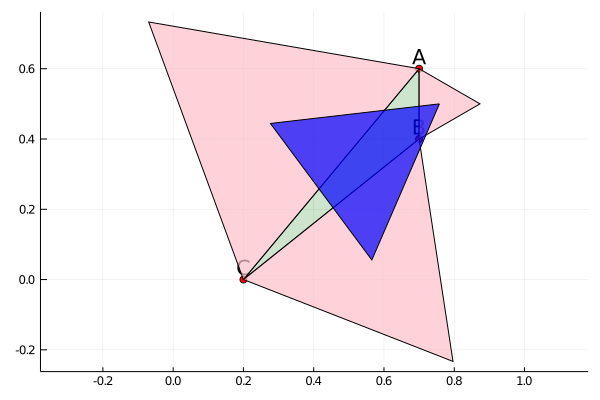

Napoleon's Theorem
The Theorem
PlaneGeometry.Theorems.Napoleon — ModuleNapoleon' theorem states that if equilateral triangles are constructed on the sides of any triangle, either all outward or all inward, the lines connecting the centres of those equilateral triangles themselves form an equilateral triangle.
Finding the Napoleon Triangle
Given a triangle, to find its Napoleon triangle, we use the following function.
PlaneGeometry.Theorems.Napoleon.napoleon_tri — Functionnapoleon_tri(📐️)Find the triangle that connects the center of three outer equilateral triangles of 📐️.
function napoleon_tri(tri)
outer_tri = outer_equitriangles(tri);
outer_circles = circumcircle.(vertices.(outer_tri));
outer_centers = PlaneGeometry.center.(outer_circles);
Triangle(outer_centers...)
endExamples
We can check if the theorem holds a particular triangle with napoleon_draw.
PlaneGeometry.Theorems.Napoleon.napoleon_draw — Methodnapoleon_draw(📐️::Triangle, labels='A':'C')Verify Napoleon's theorem for the triangle 📐️. The function works the same ways as napoleon_tri but return (🖼️, hold) where ğŸ–¼ï¸ is a plot and hold indicates where the theorem holds.
A = Point(0,0); B = Point(1, 3); C = Point(4,2)
plt, hold = napoleon_draw(A, B, C)
does_thmhold(hold)Theorem holds! 😀️To be sure that we are not just lucky, we can check if the theorem also holds for a random triangle with napoleon_rand.
PlaneGeometry.Theorems.Napoleon.napoleon_rand — Methodnapoleon_rand()Verify Napoleon's theorem for a random triangle.
plt, hold = napoleon_rand()
does_thmhold(hold)Theorem holds! 😀️
plt, hold = napoleon_rand()
does_thmhold(hold)Theorem holds! 😀️
So it looks like the theorem should be true 😁️!
Proof
Of course, examples are not proofs. But what are proofs? Often a proof is just a computation done with symbols instead of fixed numbers.
Note that symbols, e.g., $x$, is different from Julia's variables. It does not hold any value but is just a placeholder in a computation. This means if a symbolic computation with $x$ is valid, then then the computation still holds if we replace $x$ with any number.
First, note that we can assume that $A = (0,0)$, $B$ is on the positive half of $y$-axis, and $C$ is in the right half of the plane. In other words, a triangle looking like this.
plt, hold = napoleon_draw(0, 0, 0, 3, 3, 1)
pltWe can always move a triangle so it satisfies these conditions.
Then proving the theorem we can create a Triange whose vertices have coordinates which are symbols provided by SymPy. Then we can just use napoleon_tri to find its Napoleon triangle and check if it is equilateral. We put the code in the following function.
function napoleon_proof()
@vars by cx positive=true;
@vars cy;
A = Point(0, 0); B = Point(0, by); C = Point(cx, cy);
tri = Triangle(A, B, C)
npt = napoleon_tri(tri)
isequilateral(npt)
endAnd the final proof is a simple as one line of code ✌️.
does_thmhold(napoleon_proof())Theorem holds! 😀️